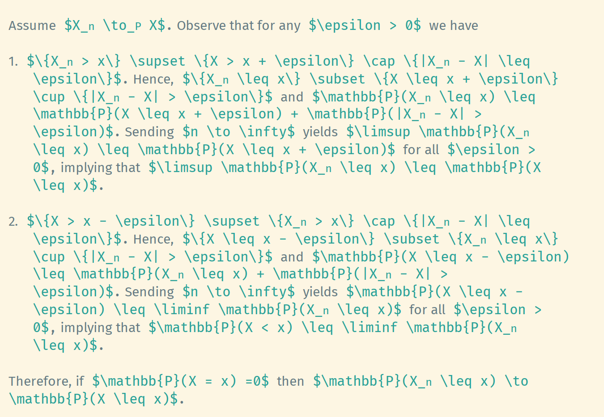
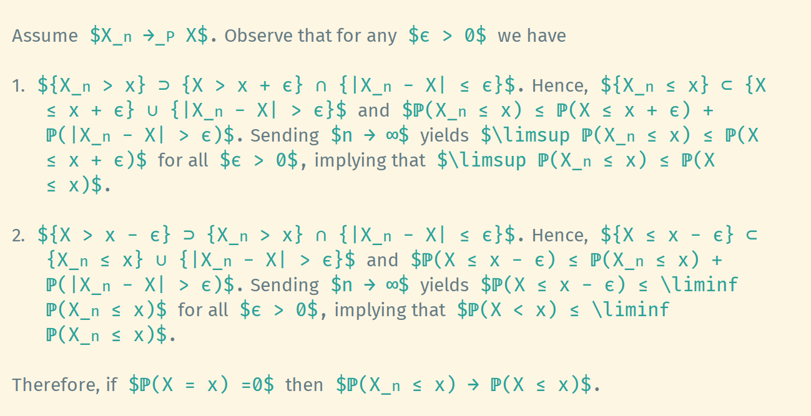

Display LaTeX Command with Unicode Characters in Emacs
If the minor mode prettify-symbols-mode is enabled, Emacs will display
certain strings with more attractive versions according to
prettify-symbols-alist. For example, $\mathbb{P}(\Omega) \leq 1$ might be
displayed as $ℙ(Ω) ≤ 1$. This happends without modifying the content
and could be disabled by turning off the prettify-symbols-mode if
necessary. This feature may be very useful in writing LaTeX formulae.
This is the effect after incorporating the settings introduced in this post.
Before prettify 
After prettify 
Create the list of pretty symbols
Each element prettify-symbols-alist looks like (SYMBOL . CHARACTER),
where the symbol matching SYMBOL (a string, not a regexp) will be
shown as CHARACTER instead.
I create a CSV file to store the symbols and associate pretty
characters. Below is a lisp function which parse such a CSV file and
return a list suitable for prettify-symbols-alist.
(defun dms/load-prettify-symbols (file) "Load a CSV file and return a suitable list for `prettify-symbols-alist`. The CSV file should be separated by `, `, where the space after comma is mandatory. In each line, the string before the comma will be displayed by the pretty symbol after the comma." (with-temp-buffer (insert-file-contents file) (setq contents (split-string (buffer-string) "\n" t)) (setq loaded-prettify-symbols-alist '()) (dolist (line contents loaded-prettify-symbols-alist) (let* ((pair (split-string line ", " t)) (original-string (car pair)) (pretty-symbol (cadr pair)) ;; Convert string to a char as `prettify-symbols-alist` uses chars not strings (pretty-char-symbol (string-to-char pretty-symbol))) (push (cons original-string pretty-char-symbol) loaded-prettify-symbols-alist)))))
The CSV file looks like
\mathbb{P}, ℙ
\leq, ≤
\geq, ≥
...
Decide whether to compose
The variable prettify-symbols-compose-predicate is a predicate for
deciding if the currently matched symbol is to be composed. By
default, not all appearance will be prettified. For example, the
string \mathbb{P}, will not be prettified as the \mathbb{P} is
followed by a comma. However, this situation happens frequently in
writing formulae. So I overwrite the rule to allow these cases.
(defun dms/lax-prettify-symbols-compose-p (start end _match) "A more lax compose predicate that allows compositing even when the match is followed by digits, parentheses, punctuation, or whitespace characters." (let ((next-char (char-after end))) (or (and next-char (string-match-p "[[:digit:]()[:punct:][:space:]]" (char-to-string next-char))) (prettify-symbols-default-compose-p start end _match))))
Tweak into the mode hook
As both prettify-symbols-alist and prettify-symbols-compose-predicate
are buffer-local variables, it is recommended to set them in a mode
hook. Below I set them in the org-mode hook. It can also be set in
latex-mode hook if necessary.
(defun dms/tweak-prettify-symbols-mode () "Set values of prettify-symbols-alist and prettify-symbols-compose-predicate" (setq prettify-symbols-alist (dms/load-prettify-symbols "~/.emacs.d/pretty-symbols.csv")) (setq prettify-symbols-compose-predicate 'dms/lax-prettify-symbols-compose-p)) (add-hook 'org-mode-hook 'dms/tweak-prettify-symbols-mode)
Choose appropriate fonts
In most cases, many mathematical symbols are not included in the main font. Fortunately, Emacs has the abilit to display selected characters with certain fonts, achieving an effect of combining fonts; see the fontset concept in the doc.
Below I patch the default fontset in order to
- display unicode characters within the range
U2100toU214Fwith font DejaVu Sans; - display unicode characters within the range
U1D7D8toU1D7#1with font DejaVu Sans; - display unicode characters within the range
U1D538toU1D56Bwith font DeJaVu Sans; - display unicode characters within the range
U1D4D0toU1D4E9with font Libertinus Math
;; refer to https://dejavu.sourceforge.net/samples/DejaVuSans.pdf ;; Unicode Letterlike symbols (set-fontset-font "fontset-default" '(#x2100 . #x214F) "DejaVu Sans") ;; Blackboard letters 0 to 9 (set-fontset-font "fontset-default" '(#x1D7D8 . #x1D7E1) "DejaVu Sans") ;; Blackboard letters A to Z and a to z (set-fontset-font "fontset-default" '(#x1D538 . #x1D56B) "DejaVu Sans") ;; Bold script letters (set-fontset-font "fontset-default" '(#x1D4D0 . #x1D4E9) "Libertinus Math")
Add more symbols
In general, the following things are needed to display unicode characters by composition:
- the string to be replaced, like
\mathscr{L}; - the symbol to be rendered, like
𝓛; - (optional) an appropriate font which can display the symbol.
There is a convenient way to find the unicode symbol, i.e., the second
thing. In Emacs, there is a builtin shortcut C-x 8, which can insert
the unicode character from its codepoint or its name. For example, the
command C-x 8 RET MATHEMATICAL BOLD SCRIPT CAPITAL L will insert the
script letter 𝓛 (actually the bold version here as the normal version
is too thin). In fact, if you type C-x 8 RET MATHEMATICAL TAB then
Emacs will pops up a list of mathematical symbols for selection.
Alternative implementation: hard replacing
The advantage of prettify-symbols-mode is that it is only a way of
rendering. The file content will not be changed when the minor mode is
toggled. However, the disadvantage is that it works on the whole
buffer and, to the best of my knowledge, cannot be restricted to a
region.
If necessary, one can choose another implementation to translate these
LaTeX commands to their unicode counterparts, i.e., simply finding and
replacing. One can implement a function named
toggle-unicode-representation, which can replace commands with unicode
characters in a region, or vice versa.